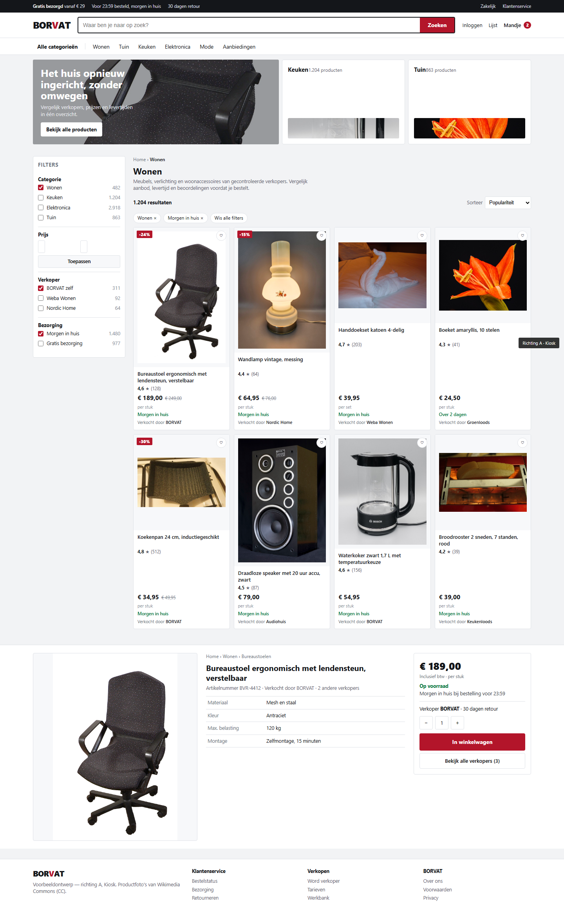
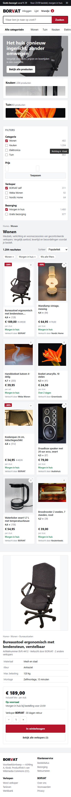
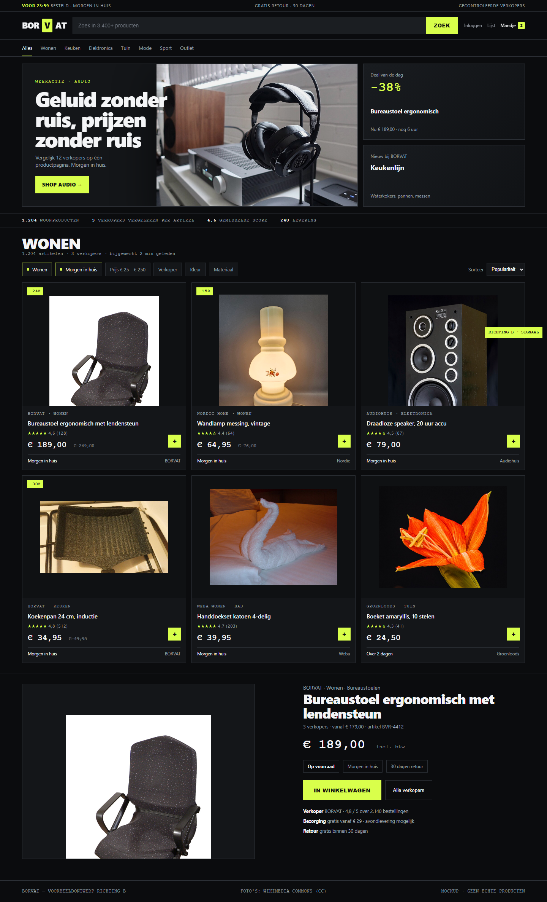
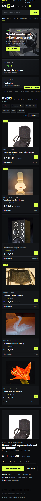
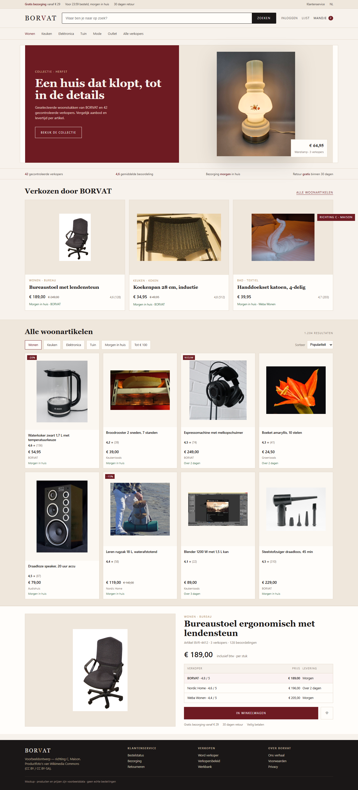
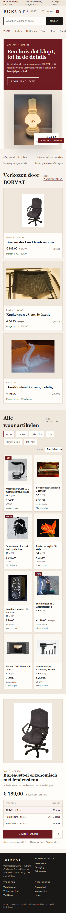

الاتجاه A — Kiosk سوق عملي عالي الكثافة


الفكرة: خلفية رمادية فاتحة، عمود فلاتر بعدّادات، شبكة 4 أعمدة، كل بطاقة تحمل السعر والتوصيل والبيع. القوة: أقصر طريق للشراء. الضعف: الهوية رقيقة، يشبه أي سوق عام.
الاتجاه B — Signaal حديث وجريء


الفكرة: خلفية شبه سوداء، لمسة ليمونية، أرقام أحادية المسافة، عنوان ضخم، شريط مؤشرات حي. القوة: لا يُنسى، مناسب للتقنية والصوت. الضعف: ثقيل على فئات كاملة، وإشارات الثقة تحتاج مساحة أكبر.
الاتجاه C — Maison تجربة تجارية متميزة بهوية BORVAT


الفكرة: نبيذي دافئ وورق فاتح، سيريف لأسماء المنتجات، صف مختار ثم نطاق كثيف، وصفحة منتج فيها جدول مقارنة ثلاثة بائعين بالسعر والتسليم. القوة: يبدو علامة تنسّق، ومع ذلك يُظهر آليات السوق. الضعف: يعتمد على جودة التصوير.
التقييم 1 ضعيف · 5 قوي
| الاتجاه | الجاذبية التجارية | سهولة التسوق | وضوح المنتج | الهوية | الواقعية كمتجر حي |
|---|---|---|---|---|---|
| A Kiosk | 3.5 | 5 | 4.5 | 2.5 | 4.5 |
| B Signaal | 4 | 4 | 4 | 5 | 3.5 |
| C Maison | 4.5 | 4 | 4 | 4.5 | 4 |
توصيتي: C كعمود فقري للهوية، مع كثافة القوائم وسلوك الفلاتر من A. اختيارك أنت، ولا يبدأ التنفيذ قبل قرارك.
الصور: Wikimedia Commons (CC BY / CC BY-SA / ملك عام) — التفاصيل في assets/ATTRIBUTION.md. الفجوة الأساسية: لا يوجد تصوير منتجات موحّد من المورّدين.